Verified ✓ · Sep 19
Verified ✓ · Sep 19
FH6 · Night Street
Night neon street · hero district · van delivery scene
Sign rework, bloom, wet reflections, wire spans, and the RAKU RAKU van rear decal all pass — zero page errors.


 Verified ✓ · Sep 19
Verified ✓ · Sep 19
District 2 · Industrial Dock
Industrial dock · night
Container stacks, gantry crane on narrow rails with beacon, forklift, sodium floodlights, wet asphalt. Zero page errors.


 Verified ✓ · Sep 19
Verified ✓ · Sep 19
Start Plaza
Starting plaza · night
Kabukicho red neon arch （歌舞伎町一番街） on real supports, 10 complete storefront assemblies, 18 perpendicular tate-kanban with real Japanese, wet reflective road. Zero page errors.


Harbor West
Fishing-port quay · night
Warehouse quayside with lit windows and roller doors, drivable quay road, moored boats, bollards, rope coils, and sodium lamps. Zero page errors.
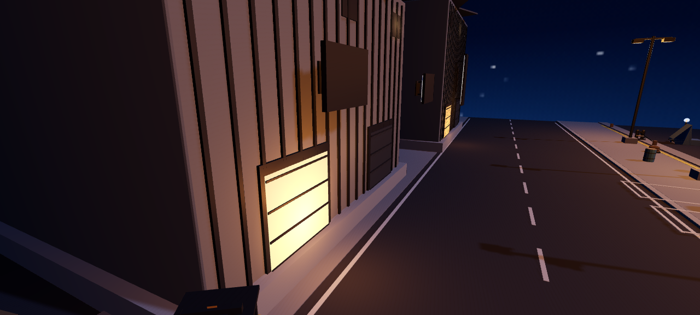
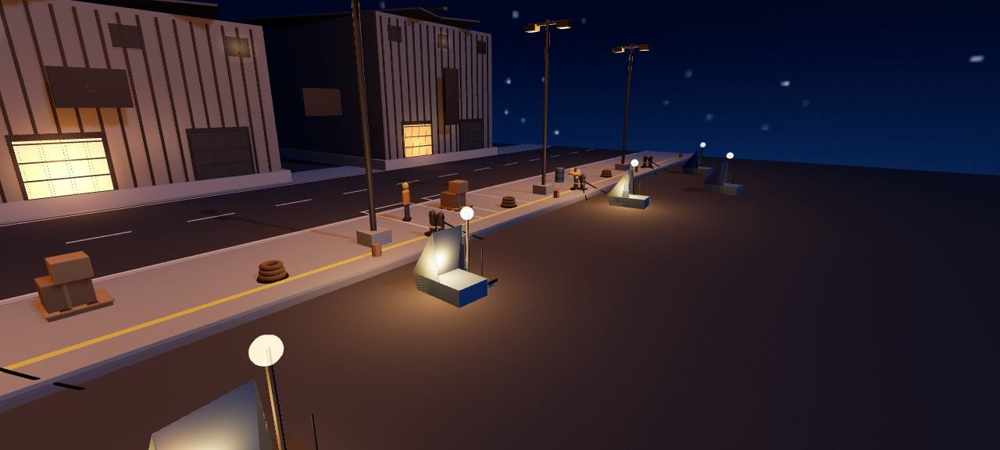
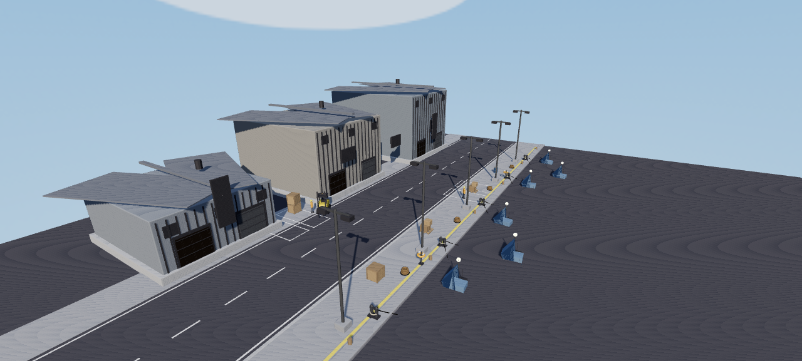

The Climb
Hillside touge town · night
Drivable sloped street through a hillside town — tiled-roof houses, stone retaining walls, lit street lamps, neon cityscape below, wet asphalt reflections. Zero page errors.
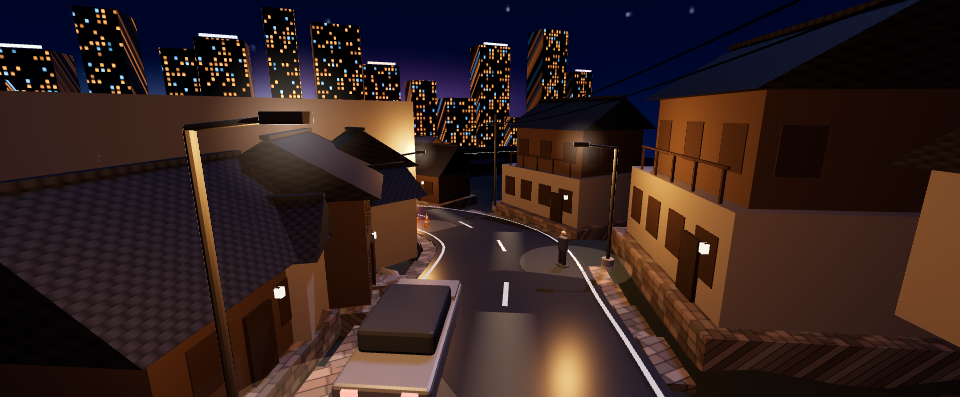
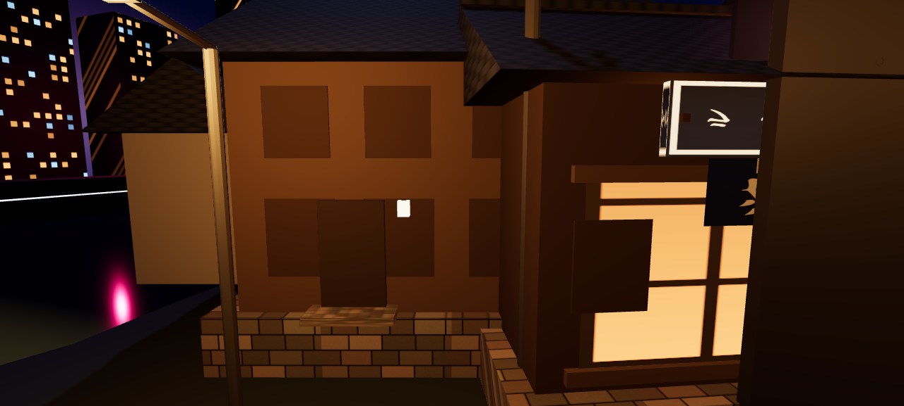


Waterfront East
Bayshore expressway · night
TXR-style chase cam on the bayshore expressway: 首都高速 C1 gantry signs （東京方面 / お台場 300m 出口）, Rainbow Bridge with anchored cables, ferris wheel, hero coupe, wet reflective asphalt. Zero page errors.
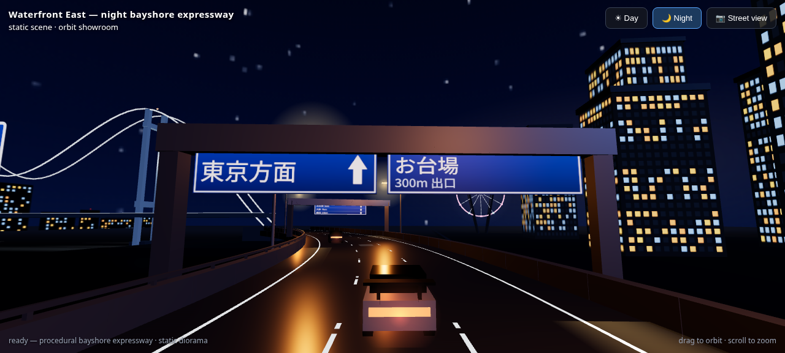
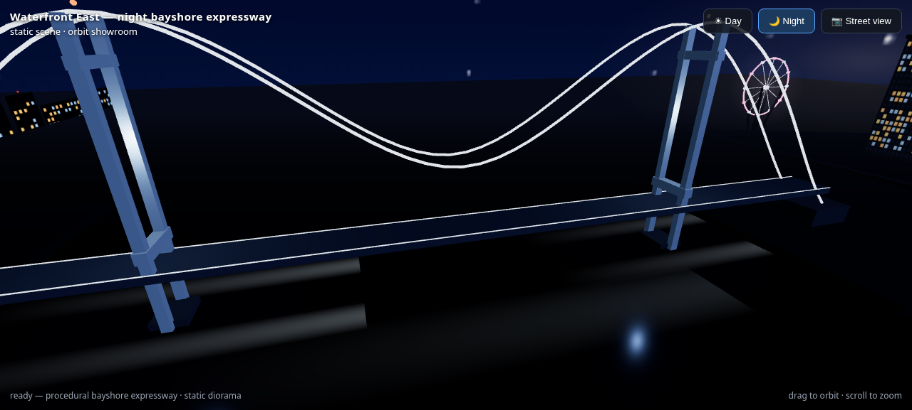
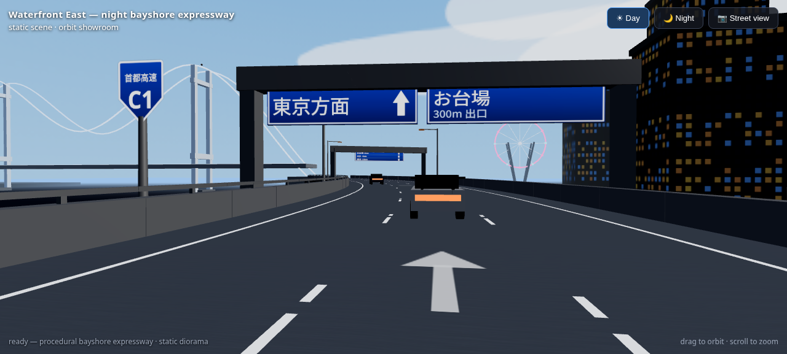

Bay Strait
Suspension bridge · night
Rainbow Bridge homage: blue-lit twin towers with bolted 東京湾/湾岸線 plaque, catenary main cables + suspenders, blinking red beacons, dark water with source-traced reflections, Akira-style dense lit-window skyline on the far shore, port cranes. Zero page errors.
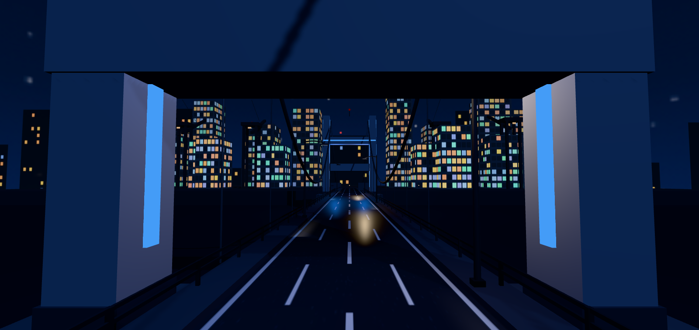
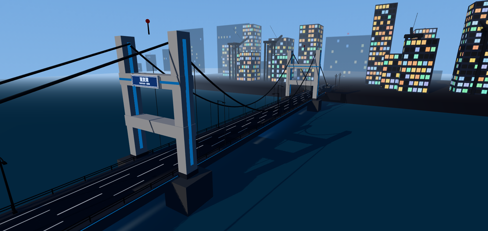
Downtown
Neon tower core · night
EVA/Akira graded: 35–70m towers with dense emissive window grids, red/white air-train moving on a curving elevated rail, 第3新東京市 pedestrian overpass, dense utility-pole + catenary wire runs, real attached signage （焼肉/パチンコ/スロット）, wet reflective street. Zero page errors.
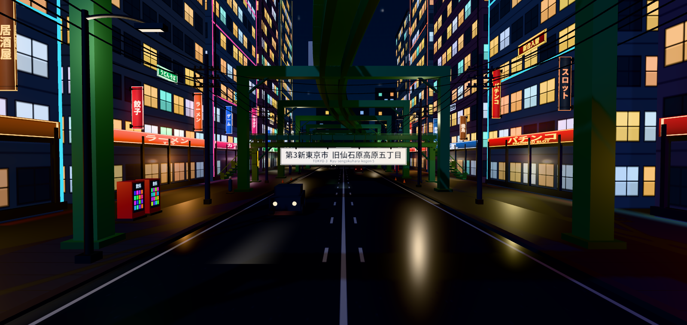
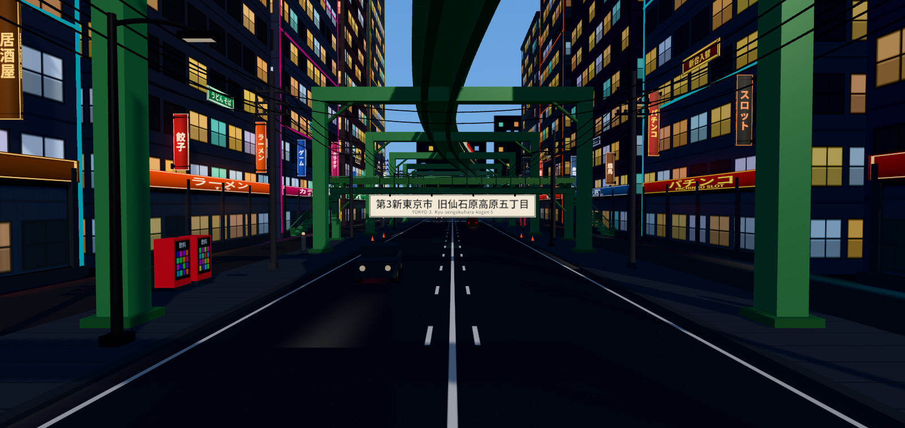
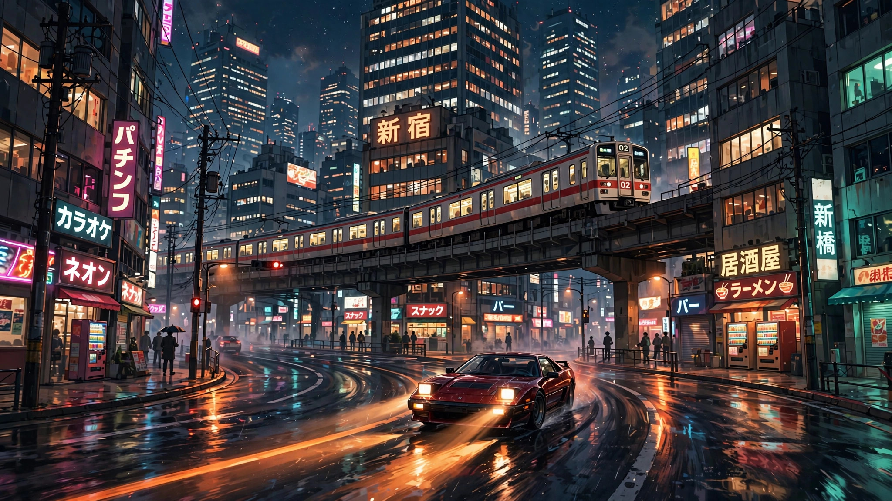
 Verified ✓ · Sep 19
Verified ✓ · Sep 19
South Ridge
Ridge district · night
Tunnel portal bored into solid mountain (no road above the bore), real Japanese signs （南稜トンネル/トンネル内 点灯せよ）, winding road, sodium lamps, wet asphalt. Zero page errors.